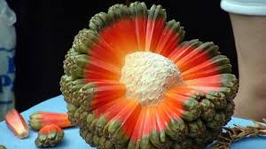

| Inicio | Página1 | Página2 | Página3 | Página4 |
|---|
| Es una fruta comestible de grandes dimensiones que se encuentra en el sudeste asiático, se caracteriza por los intensos colores cálidos que decoran su carne Su sabor es dulce, muy parecido al de la pera, pero su textura es más fibrosa. |  |